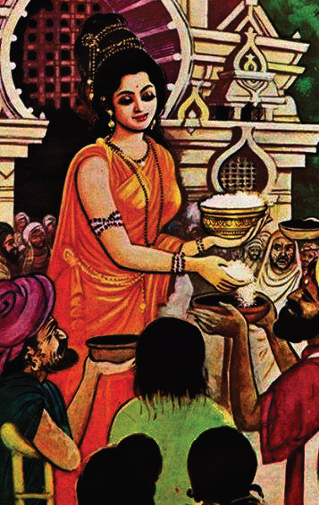

நுழையும்முன்
உலகில் தோன்றிய அனைத்து உயிரினங்களுக்கும் இன்றியமையாதது உணவு. உலக உயிர்கள் அனைத்தும் வாழ்நாள் முழுவதும் உணவு தேடியே உழைக்கின்றன. உணவே உயிர்களுக்கு ஆதாரமாக விளங்குகிறது. தனி ஒருவனுக்கு உணவு இல்லை எனில் இச்செகத்தினை அழித்திடுவோம் என்றார் பாரதியார். பசித்திருக்கும் ஒருவனுக்கு உணவு அளிப்பது உயிர் கொடுப்பதற்கு இணையானது. அதுவே சிறந்த அறமாகும்.
காட்சி 1
இடம்: மணிபல்லவத் தீவு
கதை மாந்தர்கள்: மணிமேகலை, தீவதிலகை
மணிமேகலை: (தனக்குள்) எங்குபார்த்தாலும் வெண்மணல் குன்றுகள். பூத்துக் குலுங்கும் செடிகொடிகள். அடர்ந்த மரங்கள். இடையிடையே பொய்கைகள். மனதை மயக்கும் காட்சிகள் ஆகா அருமை அருமை (அப்போது அவள் எதிரில் தீவதிலகை வருகிறாள்)
தீவதிலகை: அழகிய பெண்ணே! நீ யார்? இங்கு எப்படி வந்தாய்?
மணிமேகலை: நான் பூம்புகார் நகரைச் சேர்ந்தவள். என் பெயர் மணிமேகலை. மணிமேகலா தெய்வம் என்னை இங்குக் கொண்டு வந்து சேர்ந்தது. நீங்கள் யார் அம்மா? நீங்கள் எப்படி இத்தீவிற்கு வந்தீர்கள்?
தீவதிலகை: என் பெயர் தீவதிலகை. நான் இத்தீவையும் இதிலுள்ள புத்த பீடிகையையும் காவல் செய்து வருகிறேன். பெருமை மிக்கவர்கள் மட்டுமே இத்தீவிற்கு வந்து இந்தப் புத்த பீடிகையை வணங்க முடியும். நீ அந்தப் பெருமையைப் பெற்றிருக்கிறாய். இன்னும் நீ அறியவேண்டியது ஒன்று உண்டு.
மணிமேகலை: அஃது என்ன அம்மா?
தீவதிலகை: நம் எதிரில் பூக்கள் நிறைந்து விளங்கும் இந்தப் பொய்கையைப் பார். இதற்குக் கோமுகி என்று பெயர். கோ என்றால் பசு. முகி என்றால் முகம். பசுவின் முகம் போன்று அமைந்து இருப்பதால் இப்பொய்கை கோமுகி என்னும் பெயரைப் பெற்றது.
மணிமேகலை: ஓ! அப்படியா! வடிவத்திற்கு ஏற்ற பெயராக இருக்கிறதே!
தீவதிலகை: இப்பொய்கைக்கு வேறு ஒரு சிறப்பும் உண்டு. வைகாசித் திங்கள் முழு நிலவு நாளில் இப்பொய்கை நீரின் மேல் ஓர் அரி பாத்திரம் தோன்றும், அஃது ஆபுத்திரன் கையிலிருந்து அமுதசுரபி என்னும் பாத்திரம் ஆகும்.
மணிமேகலை: அமுதசுரபியா? அதன் சிறப்பு என்ன?
தீவதிலகை: அந்தப் பாத்திரத்தில் இட்ட உணவு எடுக்க எடுக்கக் குறையாமல் வளர்ந்து கொண்டே இருக்கும். அதனைக் கொண்டு எத்தனை பேருக்கு வேண்டுமானாலும் உணவு அளிக்கலாம்.
மணிமேகலை: அப்படியா: வியப்பாக உள்ளதே:
தீவதிலகை: ஆம். அந்தப் பாத்திரம் தோன்றும் வைகாசி முழுநிலவு நாள் இன்றுதான்.
(இவ்வாறு தீவதிலகை சொல்லிக் கொண்டிருக்கும் போதே பொய்கையின் நீருக்குமேல் அப்பாத்திரம் தோன்றுகிறது. மணிமேகலை அதனை வணங்கிக் கையில் எடுக்கிறாள்)
தீவதிலகை: மணிமேகலையே: உயிர்களின் பசிபோக்கம் அமுதசுரபியை நீ பெற்றுள்ளாய். இனி இவ்வுலக உயிர்கள் பசியால் வருந்தாத வகையில் உணவு வழங்கி உயர்வு பெறுவாயாக!
(மணிமேகலை தீவதிலகையை வணங்கி அமுதசுரபியுடன் விடை பெறுகிறாள். பூம்புகாருக்குத் திரும்புகிறாள். ஆதிரையுடம் உணவு பெறச் செல்கிறாள்.)
காட்சி 2
இடம்: ஆதிரையின் இல்லம்
கதை மாந்தர்கள்: ஆதிரை, மணிமேகலை
(ஆதிரையின் வீட்டு வாயிலில் மணிமேகலை கையில் அமுதசுரவியுடன் வந்து நிற்கிறாள்)
ஆதிரை: யார் நீங்கள்?
மணிமேகலை: இவ்வூரில் வாழ்ந்த கோவலன், மாதவி ஆகியோரின் மகள் நான். உங்கள் சிறப்பை அறிந்து இப்பாத்திரத்தில் உணவு பெற வந்தேன்.
ஆதிரை: ஓ! நீங்கள் தான் மணிமேகலையா? உங்கள் பெற்றோரைப் பற்றி அறிவேன். உங்களை இன்று தான் காண்கிறேன். இஃது என்ன பாத்திரம்? மிகவும் அழகாக இருக்கிறதே!
மணிமேகலை: இஃது அள்ள அள்ளக் குறையாமல் உணவு வழங்கும் ’அமுதசுரபி‘ ஆகும்.
ஆதிரை: இப்பாத்திரம் உங்களுக்கு எப்படிக் கிடைத்தது?
(மணிமேகலை மணிபல்லவத் தீவில் அமுதசுரபி பெற்ற வரலாற்றைக் கூறுகிறாள்)
ஆதிரை: (வியப்புடன்) அப்படியா! அமுதசுரபியின் சிறப்பை அறிந்தேன். அதில் இப்போதே உணவு இடுகின்றேன். ஆமாம் இதைக் கொண்டு என்ன செய்வீர்கள்?

மணிமேகலை: அன்பிற்குரிய ஆதிரையே, ஏழை மக்களின் பசியைப் போக்குவதே மேலான அறம். உணவு கொடுத்தவர்களே உயிரைக் கொடுத்தவர்கள் என்பதை உணர்ந்துள்ளேன். அதனால், இந்தப் பாத்திரத்தில் இருக்கும் உணவைப் பசியால் வாடும் மக்களுக்கு எல்லாம் வழங்கப் போகின்றேன்.
ஆதிரை: மிகவும் மகிழ்ச்சி. உங்கள் அறம் செழிக்கட்டும். மக்களின் பசிநோய் ஒழியட்டும். இதோ! இப்போதே அமுதசுரபியில் நான் உணவை இடுகிறேன். (ஆதிரை அமுதசுரபியில் உணவை இடுகிறாள். மணிமேகலை அமுதசுரபியைக் கொண்டு, உடல் குறையுற்றோர், பிணியாளர், ஆதரவு அற்றோர் ஆகியேருக்கு உணவு அளிக்கிறாள். பின்னர் பூம்புகாரில் உள்ள சிறைச்சாலைக்குச் சென்று அங்கு உள்ளவர்களுக்கும் உணவிடுகிறாள்.)
காட்சி 3
இடம்: அரண்மனை
கதை மாந்தர்கள்: சிறைக்காவலர், மன்னர், மணிமேகலை.
சிறைக்காவலர்: வேந்தே! வணக்கம். இன்று காலை நம் சிறைச்சாலைக்கு இளப்பெண் ஒருத்தி வந்தாள். அவள் கையில் ஒரு சிறிய பாத்திரம் இருந்தது. அந்தச் சிறிய பாத்திரத்திலிருந்து உணவை அள்ளி அள்ளிச் சிறையில் இருந்த அனைவருக்கும் வழங்கினாள். ஆனார், அந்தப் பாத்திரத்தில் இருந்த உணவு குறையவே இல்லை.
மன்னர்: (வியப்புடன்) என்ன! ஒரு சிறிய பாத்திரத்திலிருந்து உணவை எடுத்து அத்தனை பேருக்கும் வழங்கினாளா? அப்பெண்ணை உடனே அழைத்து வா.
சிறைக் காவலர்: ஆகட்டும் மன்னா.
(சிறைக்காவலர்கள் மணிமேகலையை மன்னரிடம் அழைத்து வருகின்றனர்)
மணிமேகலை: (மன்னரை வணங்கி) அருள் உள்ளம் கொண்ட அரசே! வணக்கம்.
மன்னர்: பெண்ணே! நீ யார்? உணவு அள்ள அள்ளக் குறையாத இப்பாத்திரத்தின் பெயர் என்ன? இஃது உனக்கு எப்படிக் கிடைத்தது?
(மணிமேகலை தனக்கு அமுதசுரபி கிடைத்த வரலாற்றைக் கூறுகிறாள்)
மன்னர்: (மிக்க மகிழ்ச்சியுடன்) மாதவம் செய்தவளே! இந்த உலக மக்களின் பசிப்பிணி தீர்க்கும் பாங்குடைய அறத்தைச் செய்கிறாய். நான் உனக்குச் செய்ய வேண்டிய உதவி ஏதேனும் இருக்கிறதா?
மணிமேகலை: அன்பால் ஆட்சி செய்யும் அரசே! சிறைச்சாலையில் தண்டணை பெற்றுள்ளவர்கள் திருத்தி வாழ வழிகாண வேண்டும். சிறைக்கோட்டம் அறக்கோட்டமாக மாற வேண்டும்.
மன்னர்: அதற்கு என்னவெல்லாம் செய்ய வேண்டும்?
மணிமேகலை: வாழ்க்கைக்கு அறம் சொன்ன வள்ளுவர் வாழ்ந்த நாடு இது. புத்தர் பிறந்து அறம் போதித்த பூமி இது. எவை நன்மைகள் எவை தீமைகள் என்பவற்றை எல்லாம் தக்க அறிஞர்களைக் கொண்டு சிறையில் உள்ளவர்களுக்கு எடுத்துக் கூறவேண்டும். மேலும் அவர்களுக்குப் பெற்றோரை மதித்தல், முதியோரைப் பேணல், உறவினர்களை அரவணைத்தல் போன்றவற்றை வலியுறுத்தும் அறநெறிக் கல்வியை அளிக்க வேண்டும். இதுவே என் வேண்டுகோள் மன்னா!
மன்னர்: நல்லறம் புரியும் நங்கையே! உன் வேண்டுகோள் அனைத்தையும் நடைமுறைப்படுத்த ஆணை இடுகிறேன். நீ வாழ்க! உன் அறம் வளர்க!
மணிமேகலை: நன்றி மன்னா! (வணங்கி விடைபெறுகிறாள்)
கற்பவை கற்றபின்
1 பசிப்பிணி போக்கிய பாவை நாடகத்தை வகுப்பில் நடித்துக் காட்டுக.
2 பசிப்பிணி போக்கிய பாவை என்னும் நாடகத்தைக் கதை வடிவில் சுருக்கி எழுதுக.
1 மணிமேகலா தெய்வம் மணிமேகலையை அழைத்துச் சென்ற தீவு டேஷ்
அ) இலங்கைத் தீவு
ஆ) இலட்சத் தீவு
இ) மணிபல்லவத் தீவு
ஈ) மாலத் தீவு
2 மணிமேகலை கையில் இருந்த அமுதசுரபியில் உணவு இட்ட பெண் டேஷ்
அ) சித்திரை
ஆ) ஆதிரை
இ) காயசண்டிகை
ஈ) தீவதிலகை
சொற்றொடரில் அமைத்து எழுதுக.
அ) செடிகொடிகள்
ஆ) முழுநிலவு நாள்
இ) அமுதசுரபி
ஈ) நல்லறம்
1 அமுதசுரபியின் சிறப்பு யாது?
2 கோமுகி என்பதன் பொருள் யாது?
1 மணிபல்லவத்தீவு எவ்வாறு காட்சி அளித்தது?
2 மணிமேகலை மன்னரிடம் வேண்டியது யாது?
அறச்செயல்கள் என்று நீங்கள் எவற்றை எல்லாம் கருதுகிறீர்கள்?